Examples
단면 상수 계산 예제
H형강(HBeam-400x200x8x13.sec)
Fillet 형성 유무에 따라 별도 계산
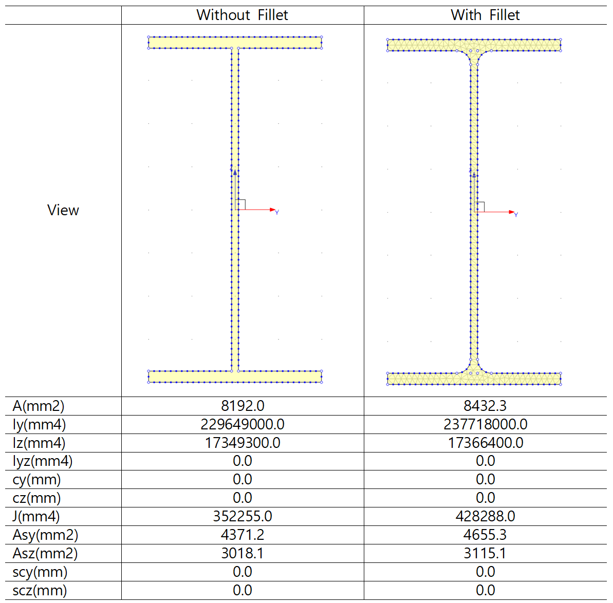
Fig. 11. H형 강의 단면 상수 계산
구멍이 있는 사각단면(Hole.sec)
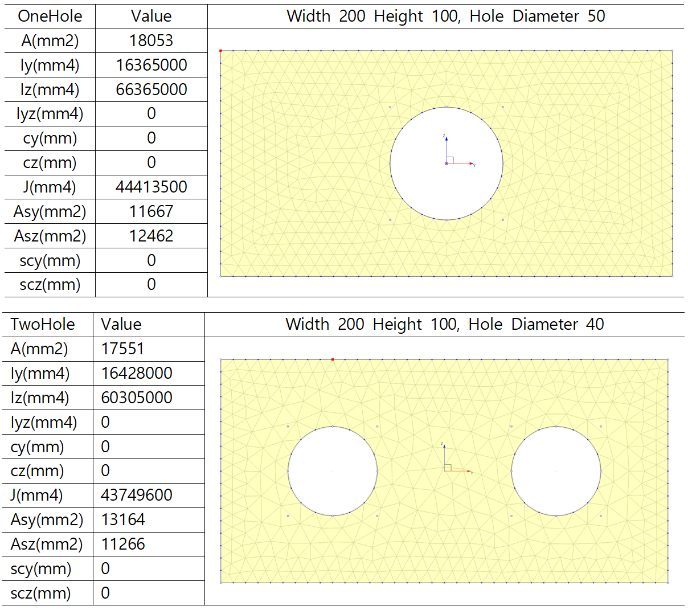
Fig. 12. 구멍이 있는 사각단면
변단면 (IGrider.sec)
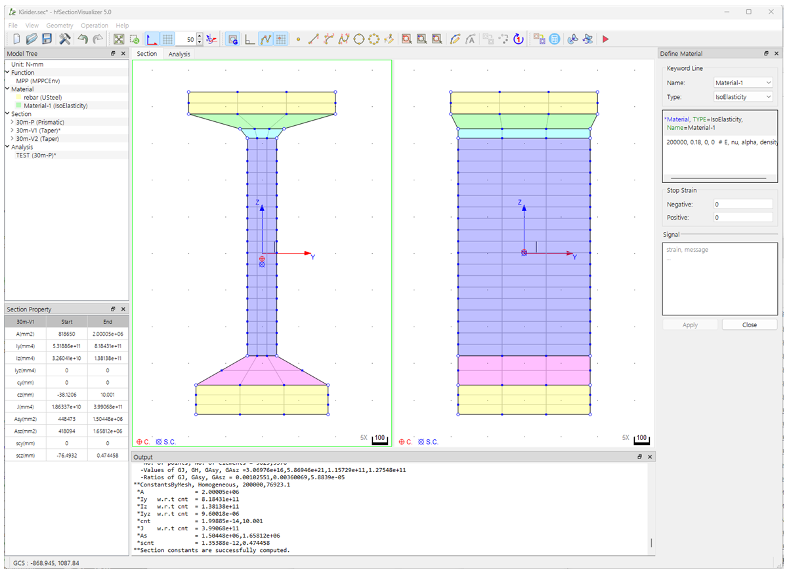
Fig. 13. Taper 단면
복합단면(RCBeam.sec)
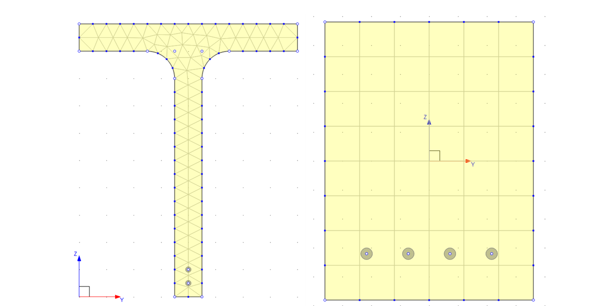
Fig. 14. 복합단면
Singly reinforced RC beam
B=280, H=550인 사각 단철근보의 휨 해석을 수행하였다. 콘크리트의 압축강도 24MPa, 철근은 SD400, 3-D25를 사용하였다. 콘크리트 인장부는 인장강도를 압축강도의 1/10로 가정하였으며, 인장강도값 도달 후 강도를 무시하는(cut-off) 모델을 사용하였으며, 철근의 2차 강성을 무시하였다.
Fig. 15. 단철근보(우동균 등, 철근콘크리트, 3판, 예제 5-10)
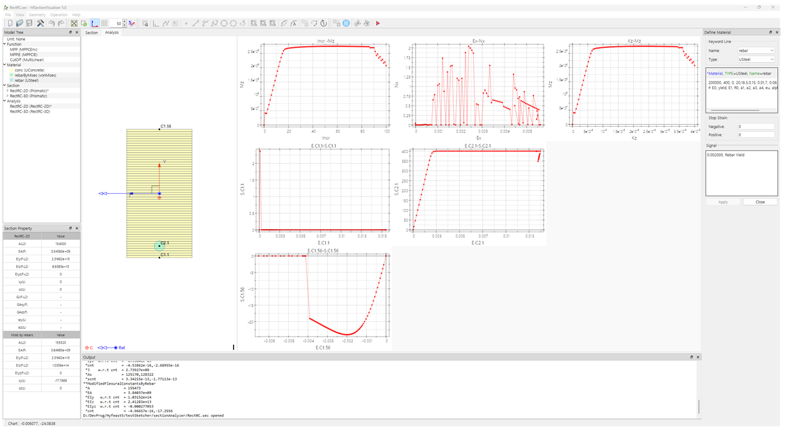
Fig. 14. 실행전경
List. 3. RectRC.sec
*Function, TYPE=MPPCEnv, Name=MPP
24, 23025, 0.002, 0.004, 24, 0.004
*Function, TYPE=MPPCIE, Name=MPPIE
MPP, 0.002
*Function, TYPE=MultiLinear, Name=CutOff
0, 0
0.0001042, 2.4
0.0001042, 0
*Material, TYPE=UGeneric, Name=conc
Compression, MPP, MPPIE
Tension, CutOff, Secant
*Material, TYPE=vonMises, Name=rebarByMises
200000, 0, 0, 0 # E, nu, alpha, density
400, 0, 0 # yield, H, theta
*Material, TYPE=USteel, Name=rebar
200000, 400, 0, 20,18.5,0.15, 0.01,7, 0.08, 0, 0
# E0, yield, E1, R0, a1, a2, a3, a4, eu, alpha, density
*Section, Type=Beam, Name=RectRC-2D
*Cell, TYPE=Layer,Stack, Mat=conc
-550/2, 280
550/2, 280, 55
*Cell, TYPE=Point, Mat=rebar
1, -225, 0, 1520
*SectionSignal
conc, 0.0001042, "Concrete Tesile Failure"
rebar, 0.002, "Rebar Yield"
*SectionAnalysis, Name=RectRC-2D, Section=RectRC-2D, Output=Preselect
*SectionStep, ExtLoad=0,4e-05,NK, Inc=100
*SectionAnalysis, Name=RectRC-3D, Section=RectRC-3D, Ref=90,0,0, Output=Preselect
*SectionStep, ExtLoad=0,4e-05,NK, Inc=100
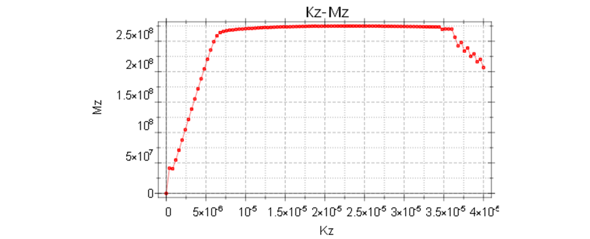
Fig. 17. 모멘트-곡률 곡선(단위는 N-mm)
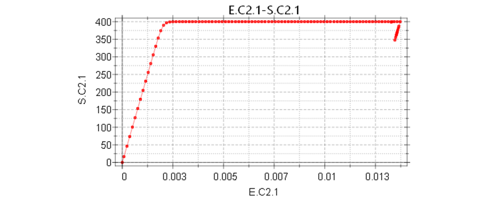
Fig. 18. 최외곽 철근의 응력-변형률 곡선(단위는 N-mm)
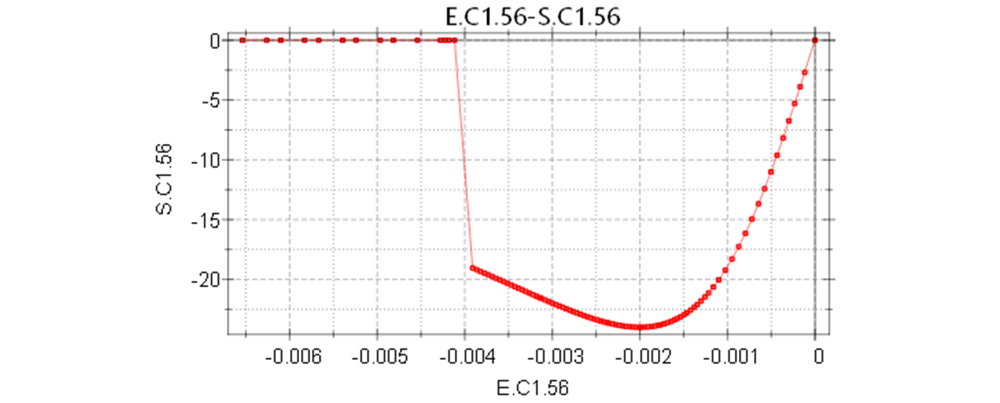
Fig. 19. 압축연단 콘크리트의 응력-변형률 곡선(단위는 N-mm)
RC column with seismic details
내진상세를 갖는 기둥 단면에 대한 축력-휨 해석으로 콘크리트 강도는 24MPa이고, 철근은 SD300인 36-D25이다. 구속콘크리트의 구속압은 1.5MPa로 가정하였으며 이로부터 산정되는 최대강도(fccp)는 30이고, 최대변형율은 0.01로 가정하였다. 콘크리트 인장부는 강도 1.826MPa와 tension-cutoff를 가정하였다. 철근의 2차강성은 초기강성 대비 0.01282로 가정하였다. 해석에 주어진 축력은 2000kN이다.
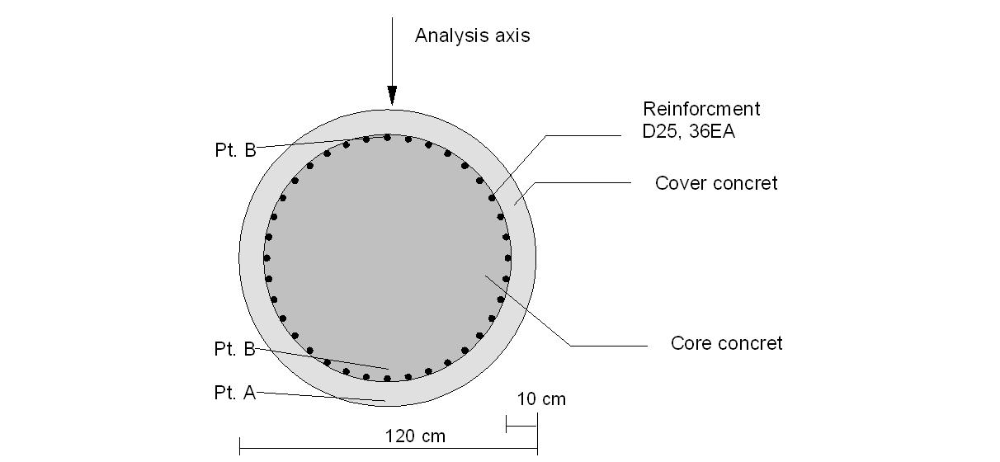
Fig. 20. 내진상세를 갖는 기둥 단면 (이재훈, “철근콘크리트 교각의 내진설계”, 2000.)
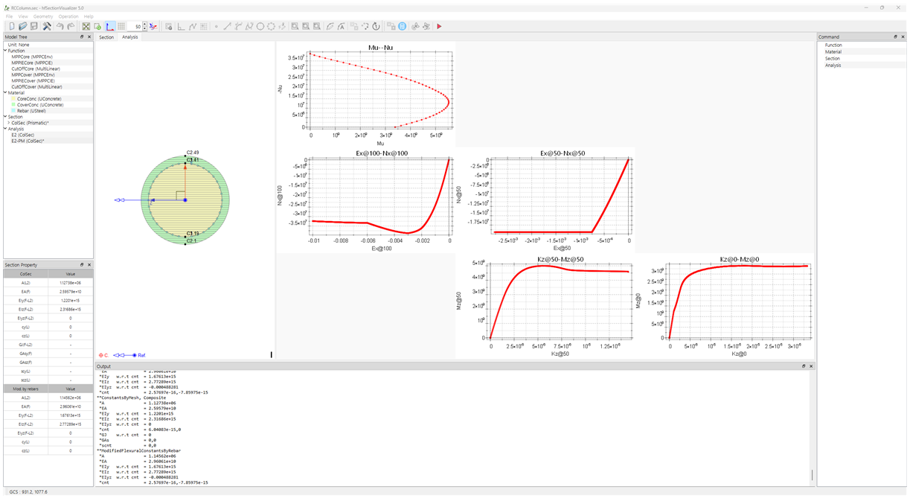
Fig. 21. 실행전경
List. 4. RCColumn.sec
*Function, TYPE=MPPCEnv, Name=MPPCore
24, 23025, 0.002, 0.01, 33.07, 0.01
*Function, TYPE=MPPCIE, Name=MPPIECore
MPPCore, 0.00577917
*Function, TYPE=MultiLinear, Name=CutOffCore
0, 0
0.0007926, 1.825
0.0007926, 0
*Function, TYPE=MPPCEnv, Name=MPPCover
24, 23025, 0.002, 0.003, 24, 0.006
*Function, TYPE=MPPCIE, Name=MPPIECover
MPPCover, 0.002
*Function, TYPE=MultiLinear, Name=CutOffCover
0, 0
0.0007926, 1.825
0.0007926, 0
*Material, TYPE=UGeneric, Name=CoreConc
Compression, MPPCore, MPPIECore
Tension, CutOffCore, Secant
*Material, TYPE=UGeneric, Name=CoverConc
Compression, MPPCover, MPPIECover
Tension, CutOffCover, Secant
*Material, TYPE=USteel, Name=Rebar
200000, 400, 2564, 20,18.5,0.15, 0.01,7, 0.08, 0, 0
# E0, yield, E1, R0, a1, a2, a3, a4, eu, alpha, density
*Section, Type=Beam, Name=ColSec
*Cell, TYPE=Layer,Circle, Mat=CoreConc
500, 0, 0, 20
*Cell, TYPE=Layer,Circle, Mat=CoverConc
600, 500, 0, 4, 20
*Cell, TYPE=Point,Circle, Mat=Rebar
500, 506.7, 0, 0, 0, 36
*SectionStop
CoreConc,-0.01,
Rebar,,0.08
*SectionSignal
CoreConc, 0.0007926, "Core concrete tensile failure"
CoverConc, 0.0007926, "Cover concrete tensile failure"
CoverConc, -0.003, "Cover concrete compressive failure"
Rebar, 0.002, "Rebar Yield"
*SectionAnalysis, Name=E2, Section=ColSec, Output=Preselect
*SectionStep, ExtLoad=-2e+06,0,NM, Inc=1
*SectionStep, ExtLoad=-2e+06,5e-05,NK, Inc=100
*SectionAnalysis, Name=E2-PM, Section=ColSec, Output=Preselect
*SectionStepPM, MaxDeform=-0.01,3.33333e-05 Inc=1000 PMPoints=50
*SectionStepPM, MaxDeform=-0.01,0.02/600, Inc=1000, PMPoints=50
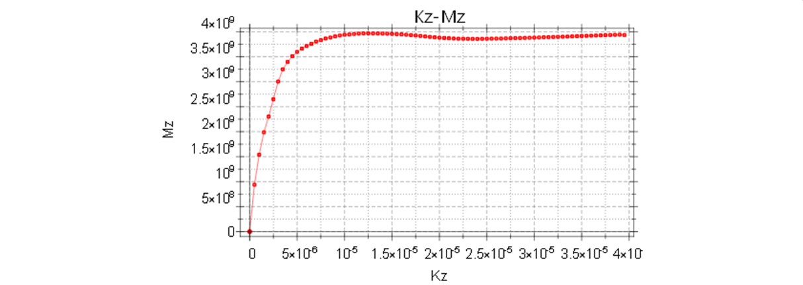
Fig. 22. E2 해석시 모멘트-곡률 곡선
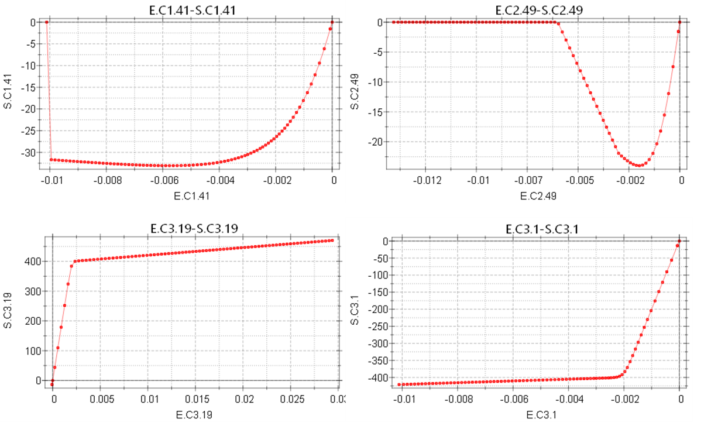
Fig. 23. 주요 재료점의 응력-변형률 곡선
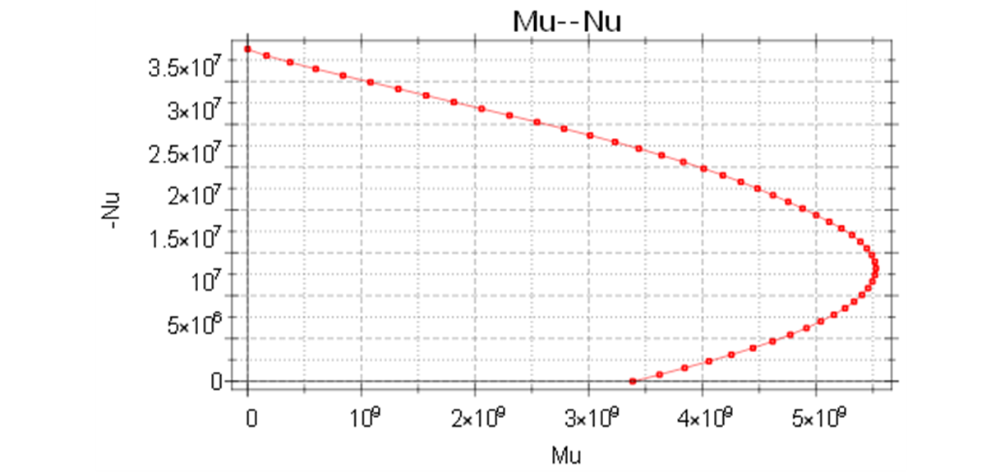
Fig. 24. PM 다이어그램
UHPC beam
Fig. 25과 같은 형상을 갖는 UHPC 보부재에 대한 휨해석을 수행하였다.
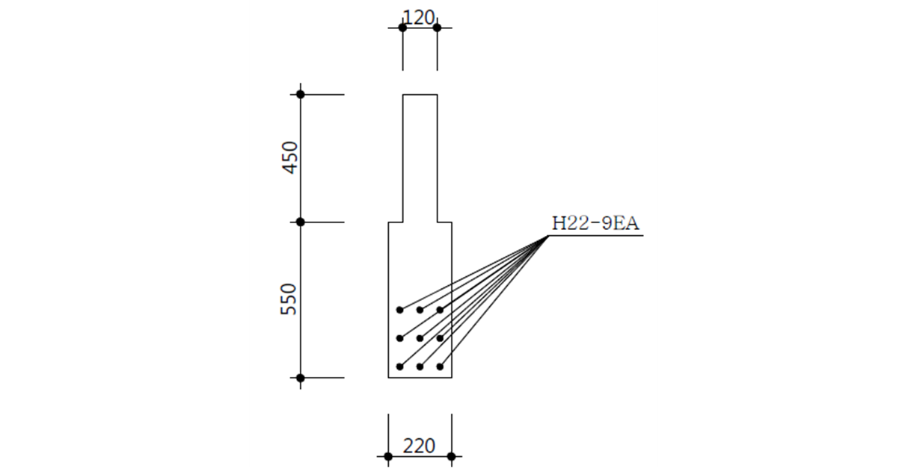
Fig. 25. SC120f 보 부재
UHPC의 재료모델은 Fig. 22와 같으며 각종 재료 정수는 다음과 같다.
- 설계기준강도 : \(\small f_{ck}\) =120 MPa
- 허용인장강도 : \(\small f_{tk}\)=7 MPa
- 탄성계수 : \(\small E_c\)=40,000 MPa
- 특성길이 : \(\small \frac{L_{eq}}{h_{beam}} = 0.8 \left[ 1 - \frac{1}{(1.05 + 6 \frac{h_{beam}}{l_{ch}})^3} \right]\)
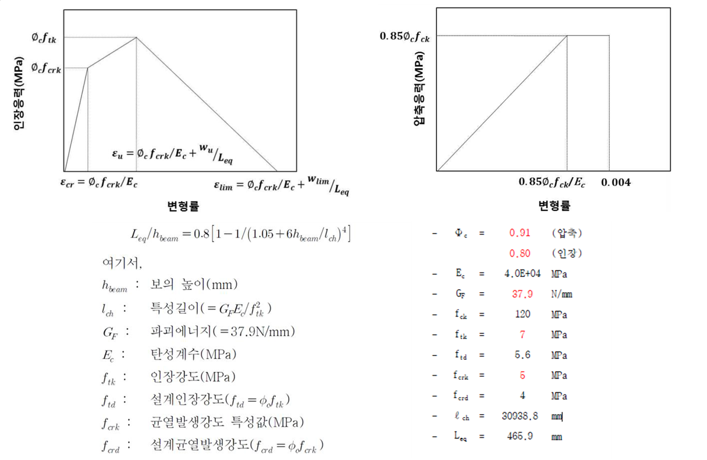
Fig. 26. UHPC의 응력-변형률 곡선
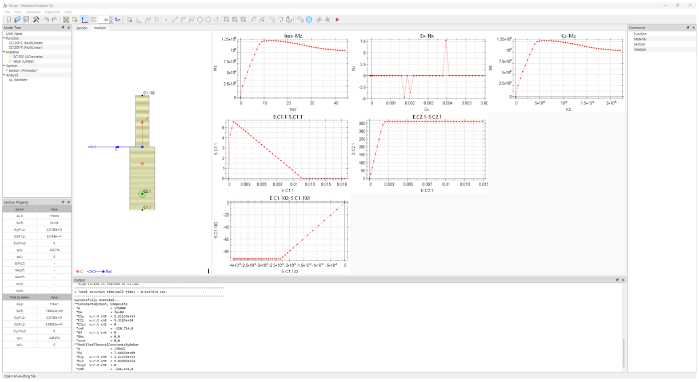
Fig. 27. 실행전경
List. 5. UL.sec
# UHPC beam
#
# Unit : N-mm
#
# fck = 120 MPa, fcrk = 5 MPa, ftk = 7 MPa
# phic= 0.91(Compression), 0.8(Tension)
# Ec = 40000 MPa
# wu = 0.3 mm
# Leq = 465.8786 mm
*Function, TYPE=MultiLinear, Name=SC120f-C
0., 0.
0.85*0.91*120/40000, 0.85*0.91*120
0.004, 0.85*0.91*120
*Function, TYPE=MultiLinear, Name=SC120f-T
0., 0.
0.8*5/40E3, 0.8*5
0.8*5/40E3+0.3/465.8786, 0.8*7
0.8*5/40E3+5.3/465.8786, 0.
*Material, Type=UGeneric, Name=SC120f
Compression, SC120f-C
Tension, SC120f-T,Secant
# Yield = 400 MPa , zero 2nd moduls,
*Material, Type=USteel, Name=rebar
200E3, 400*0.9, 0, 20,18.5,0.15
*SectionStop
SC120f,-0.004,
rebar,-0.12,0.12
# Et = 0. steel assumed
*Section, TYPE=Beam, Name=section
*Cell, TYPE=Layer,Stack, Mat=SC120f
-550, 220, ToDirectForm
0, 220, 55
0, 120, 0
450, 120, 45
*Cell, TYPE=Point, Mat=rebar
1, 450-860, 0, 3421.194
*SectionAnalysis, Name=UL, Section=section
*SectionOutput, TYPE=All
*SectionStep, ExtLoad=0.,0.00005,NK, Inc=100
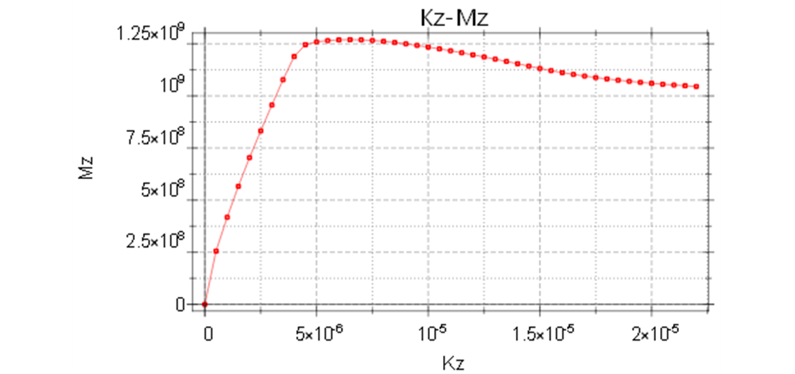
Fig. 28. UHPC의 모멘트-곡률 곡선
축력을 받은 RC 보와 프리스트레스 보
프로그램 검증을 위해 Michael P. Collins 등(1991)의 교과서에서 제시한 축력을 받는 프리스트레스 보에 대한 해석을 수행하였다.
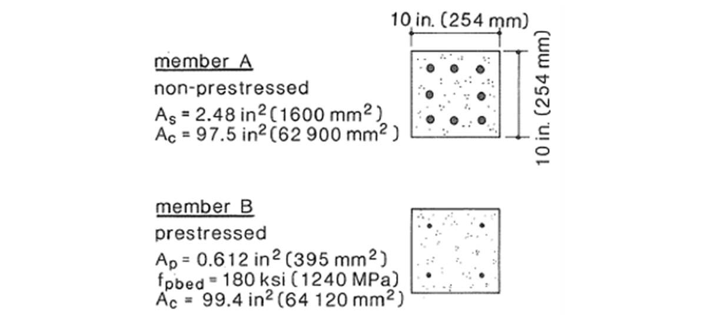
Fig. 29. 축력을 받는 RC 보와 프리스트레스 보(Collins 등(1991)의 text book내의 Figure 4-4)
참고문헌 Michael P. Collins , Denis Mitchell(1991) “Prestressed Concrete Structures”, Prentice Hall. -
List. 6. P1.sec
# Unit : N-mm
# Verification sample :
# Prestress COncrete Structures by Michael P. Collins, and Denis Mitchell, Figure 4-4
#
## Concrete model
*Function, TYPE=MultiLinear, Name=concC
0., 0
0.0005, 15.09375
0.001, 25.875
0.0015, 32.34375
0.002, 34.5
0.0025, 32.34375
0.003, 25.875
0.003, 0.
*Function, TYPE=MultiLinear, Name=concT
0., 0.
2*0.0005/15.09375, 2.
2*0.0005/15.09375, 0.
*Material, Type=UGeneric, Name=conc
Compression, concC
Tension, concT,Secant
## Rebar model
*Material, Type=vonMises, Name=rebar
200000.
400 # TYPE=Value, yield, H, theta, Kinf, K0, delta
## Tendon model
*Material, Type=vonMises, Name=tendon
200000.
1655 # TYPE=Value, yield, H, theta, Kinf, K0, delta
## Section A
*Section, TYPE=Beam, Name=memberA
*Cell, TYPE=Layer,Stack Mat=conc
-254/2, 254
254/2, 254, 2
*Cell, TYPE=Point, Mat=rebar
1,0.,0.,1600.
## Section B
*Section, TYPE=Beam, Name=memberB
*Cell, TYPE=Layer,Stack, Mat=conc
-254/2, 254
254/2, 254, 2
*Cell, TYPE=Point, Mat=tendon
1, 0,0, 395 # id, z, z, A
## Set stop strain
*SectionStop
conc,-0.003,
rebar,-0.12,0.12
tendon, -0.2, 0.2
*SectionSignal
conc, 0.0001042, "Concrete Tesile Failure"
rebar, 0.002, "Rebar Yield"
*SectionAnalysis, Name=P1-A-T Section=memberA
*SectionStep, ExtLoad=0.003,0.,EM, Inc=100
*SectionAnalysis, Name=P1-A-C Section=memberA
*SectionStep, ExtLoad=-0.003,0.,EM, Inc=100
*SectionAnalysis, Name=P1-B-T Section=memberB
*SectionStep, ExtLoad=0.,0.,NM, Inc=10
InitialStress, 2, 1240 # pretension
*SectionStep, ExtLoad=0.003,0.,EM, Inc=50
*SectionAnalysis, Name=P1-B-C Section=memberB
*SectionStep, ExtLoad=0.,0.,NM, Inc=1
InitialStress, 2, 1240 # pretension
*SectionStep, ExtLoad=-0.003,0.,EM, Inc=50
## Section B - post
#*SectionAnalysis, Name=P1-B-TPost, Section=memberB
# *SectionStep, ExtLoad=0.,0.,NM, Inc=10
# Stress, 2, 1240 # posttension
# *SectionStep, ExtLoad=0.003,0.,EM, Inc=50
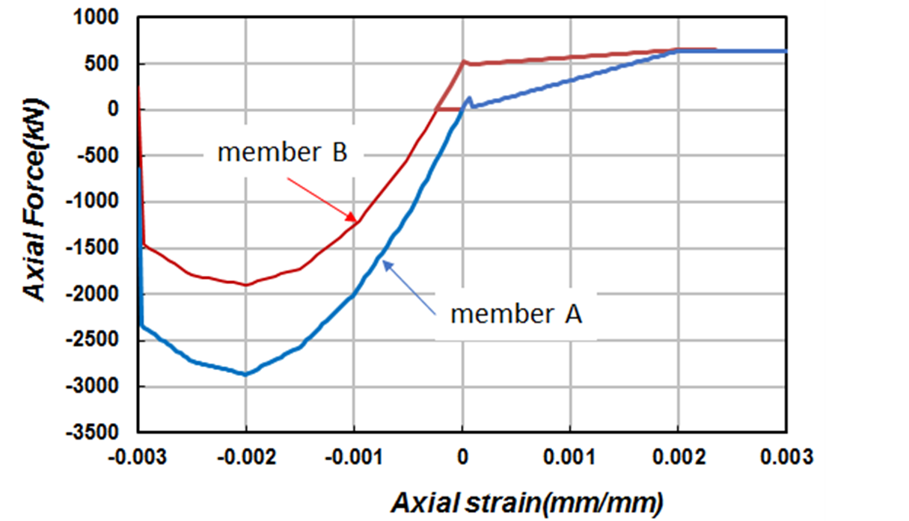
Fig. 30. 축력을 받는 RC 보와 프리스트레스 보의 해석결과
PHC 말뚝
PHC 말뚝은 프리텐션을 갖는 중공원형 부재이다. 여기에서는 직경 500 mm, A 종에 대한 해석을 수행하였다. KS 규격에 의하면 축력이 없는 상태, 축력을 3단계로 가력한 상태에 대한 휨 실험을 통해 균열 및 파괴모멘트가 일정수준이상일 것을 규정하고 있다. 여기에서는 파괴모멘트에 대한 해석을 수행하였다.
| 명칭 | 축력 (kN) | 파괴모멘트 (KS 규격, kN·m) | 파괴모멘트 (해석값, kN·m) |
|---|---|---|---|
| N0 | 0 | 155 | 169.4 |
| N1 | 882.9 | 304.1 | 328 |
| N2 | 1766 | 421.8 | 454.4 |
| N3 | 2649 | 496.4 | 536.8 |
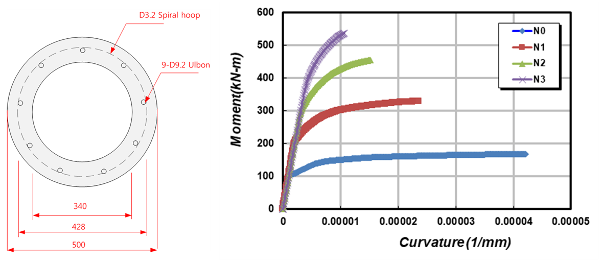
Fig. 31. PHC500A
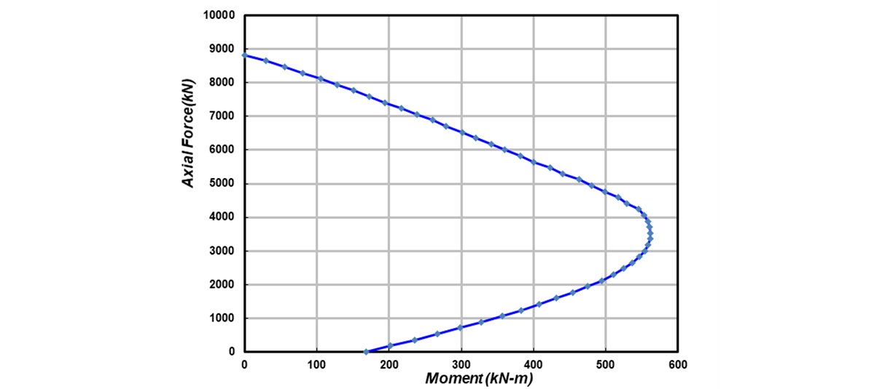
Fig. 32. PHC500A 의 PM 해석 결과
List. 7. PHC500A.sec
# K500E
# Unit : N-mm
#################################################
# Material model data (UNIT = N-mm)
#################################################
# KDS-C80 : KDS's 80 MPa concrete model for nonlinear analysis
# KDS-C80-LST-EX : KDS's 80 MPa concrete model for sectional analysis on extreme event state (phi=1., no tension)
# KDS-C80-LST-UL : KDS's 80 MPa concrete model for sectional analysis on ultimate state (phi=0.65, no tension)
# SD600L : SD600 Rebar less than D22 for nonlinear analysis or extreme event state (phi = 1.)
# SD600L-0.9 : SD600 Rebar less than D22 for nonlinear analysis or ultimate event state (phi = 0.9)
#################################################
#################################################
# KDS-C80N : KDS's 80 MPa concrete model for nonlinear analysis
*Function, Type=FIBCEnv, Name=KDS-C80-C
86., 41270.9464, 0.00279 # fcm, Ec, eco
*Function, TYPE=MultiLinear, Name=KDS-C80-T
0., 0.
5.845031943/41270.9464, 5.845031943
5.845031943/41270.9464, 0.
*Material, TYPE=UGeneric, Name=KDS-C80
Compression, KDS-C80-C, Plastic
Tension, KDS-C80-T, Secant
#################################################
# KDS-C80-LST-EX : KDS's 80 MPa concrete model for sectional analysis on extreme event state (phi=1., no tension)
*Function, TYPE=ParabolaCEnv, Name=KDS-C80-LST-EX-C
0.85*80., 1.22, 0.0024, 0.0029 # fco, n, eco, ecu
*Material, TYPE=UGeneric, Name=KDS-C80-LST-EX
Compression, KDS-C80-LST-EX-C, Plastic
#################################################
# KDS-C80U : KDS's 80 MPa concrete model for sectional analysis on ultimate state (phi=0.65)
*Function, TYPE=ParabolaCEnv, Name=KDS-C80-LST-UL-C
0.65*0.85*80., 1.22, 0.0024, 0.0029 # fco, n, eco, ecu
*Material, TYPE=UGeneric, Name=KDS-C80-LST-UL
Compression, KDS-C80-LST-UL-C, Plastic
#################################################
# SD600H16E : SD600H16 Rebar for nonlinear analysis or extreme event state (phi = 1.)
*Material, TYPE=vonMises, Name=SD600L
200000.
600., 496.0727573, # TYPE=Value, yield, H, theta, Kinf, K0, delta
#################################################
# SD600H16U : SD600H16 Rebar for nonlinear analysis or ultimate event state (phi = 0.9)
*Material, TYPE=vonMises, Name=SD600L-0.9
200000.
600.*0.9, 496.0727573, # TYPE=Value, yield, H, theta, Kinf, K0, delta
#################################################
# Ulbon
*Material, Type=vonMises, Name=ulbon74
200000.
1335., 1391.373484, # TYPE=Value, yield, H, theta, Kinf, K0, delta
*Material, Type=vonMises, Name=ulbon92
200000.
1325., 1540.372671, # TYPE=Value, yield, H, theta, Kinf, K0, delta
*Material, Type=vonMises, Name=ulbon110
200000.
1325., 1540.372671, # TYPE=Value, yield, H, theta, Kinf, K0, delta
*Material, Type=vonMises, Name=neturen71
200000.
1275., 4407.294833, # TYPE=Value, yield, H, theta, Kinf, K0, delta
#################################################
# Stop and signal strains
*SectionStop
KDS-C80, -0.0029
KDS-C80-LST-EX, -0.0029
KDS-C80-LST-UL, -0.0029
SD600L,-0.1,0.1
SD600L-0.9,-0.1,0.1
ulbon74,-0.04,0.04
ulbon92,-0.04,0.04
ulbon110,-0.04,0.04
neturen71,-0.04,0.04
*SectionSignal
KDS-C80, 5.845031943/41270.9464, "Concrete tensile failure"
SD600L,-600/200000, "Rebar compressive yield"
SD600L, 600/200000, "Rebar tesile yield"
SD600L-0.9,-600*0.9/200000, "Rebar compressive yield"
SD600L-0.9, 600*0.9/200000, "Rebar tensile yield"
ulbon74, -1335/200000, "PS compressive yield"
ulbon74, 1335/200000, "PS tensile yield"
ulbon92, -1325/200000, "PS compressive yield"
ulbon92, 1325/200000, "PS tensile yield"
ulbon110, -1318.9/200000, "PS compressive yield"
ulbon110, 1318.9/200000, "PS tensile yield"
neturen71, -1275/200000, "PS compressive yield"
neturen71, 1275/200000, "PS tensile yield"
### PHC500A section
*Section, Type=Beam, Name=PHC500A
*Cell, TYPE=Layer,Circle, Mat=KDS-C80
250,170,0,8,17
*Cell, TYPE=Point,Circle, Mat=ulbon92
220-9.2/2, 64, 0, 0, 0, 9
### Prention + N0 axial force flexure
*SectionAnalysis, Name=PHC500A-N0, Section=PHC500A
*SectionStep, ExtLoad=0.,0.,NM, Inc=1
InitialStress, 2, 994.625 # 0.7*fpu
*SectionStep, ExtLoad=0,0.02/250,NK, Inc=1000
### Prention + N1 axial force flexure
*SectionAnalysis, Name=PHC500A-N1, Section=PHC500A
*SectionStep, ExtLoad=0.,0.,NM, Inc=1
InitialStress, 2, 994.625 # 0.7*fpu
*SectionStep, ExtLoad=-882900,0,NM, Inc=1
*SectionStep, ExtLoad=-882900,0.02/250,NK, Inc=1000
### Prention + N2 axial force flexure
*SectionAnalysis, Name=PHC500A-N2, Section=PHC500A
*SectionStep, ExtLoad=0.,0.,NM, Inc=1
InitialStress, 2, 994.625 # 0.7*fpu
*SectionStep, ExtLoad=-1766000,0,NM, Inc=1
*SectionStep, ExtLoad=-1766000,0.02/250,NK, Inc=1000
### Prention + N3 axial force flexure
*SectionAnalysis, Name=PHC500A-N3, Section=PHC500A
*SectionStep, ExtLoad=0.,0.,NM, Inc=1
InitialStress, 2, 994.625 # 0.7*fpu
*SectionStep, ExtLoad=-2649000,0,NM, Inc=1
*SectionStep, ExtLoad=-2649000,0.02/250,NK, Inc=1000
### PM diaggram
*SectionAnalysis, Name=PHC500A, Section=PHC500A
*SectionStep, ExtLoad=0.,0.,NM, Inc=1
InitialStress, 2, 994.625 # 0.7*fpu
*SectionStepPM, MaxDeform=-0.005,0.02/250, Inc=1000, PMPoints=20